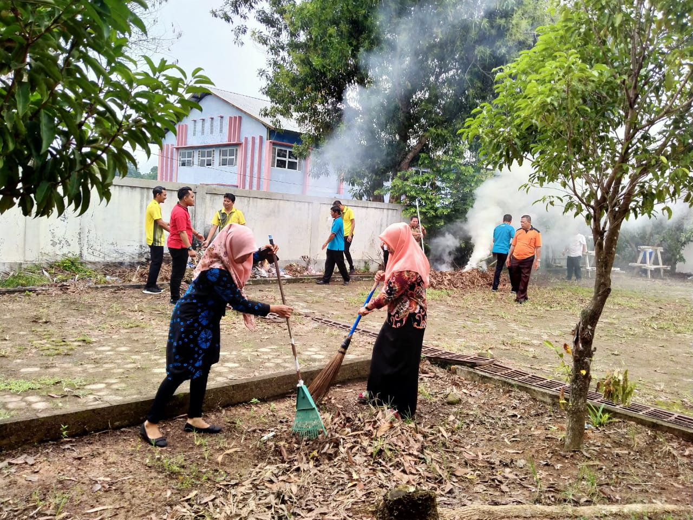
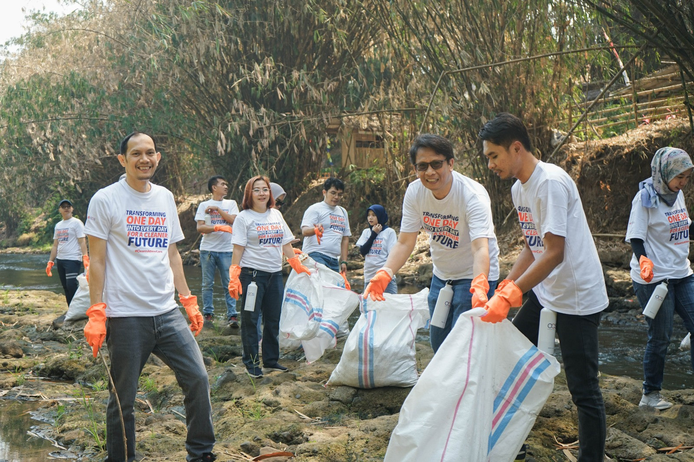

Deskripsi
Kegiatan ini bertujuan untuk membersihkan area publik di pusat kota Solo, termasuk taman, trotoar, dan aliran sungai kecil.
Tanggal: 27 Juni 2026
Waktu: 07.00 - 12.00 WIB
Lokasi: Taman Sriwedari, Solo
Waktu: 07.00 - 12.00 WIB
Lokasi: Taman Sriwedari, Solo
Kriteria Relawan
- Berusia minimal 16 tahun
- Sehat jasmani
- Mampu bekerja sama dalam tim
Cara Mendaftar
Hubungi koordinator kegiatan melalui WhatsApp: 0812-3456-7890 atau email ke relawan@temanrelawan.org.
Dokumentasi Kegiatan Sebelumnya



Relawan yang Terlibat
- Andi Saputra
- Nur Aisyah
- Rama Dwi
- Salsa Rachmawati
- Kevin Mulyono